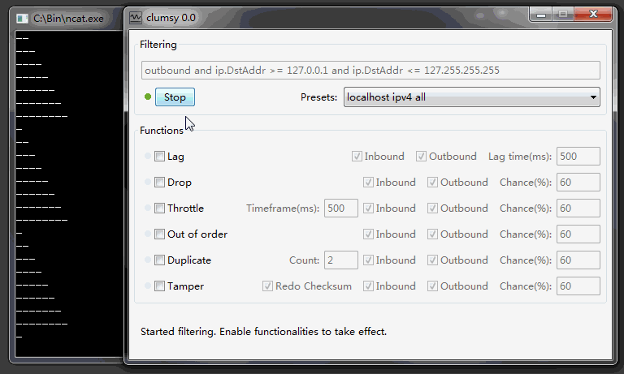

clumsy 能在 Windows 平台下人工造成不稳定的网络状况，方便你调试应用程序在极端网络状况下的表现。
利用封装 Winodws Filtering Platform 的WinDivert 库, clumsy 能实时的将系统接收和发出的网络数据包拦截下来，人工的造成延迟，掉包和篡改操作后再进行发送。无论你是要重现网络异常造成的程序错误，还是评估你的应用程序在不良网络状况下的表现，clumsy 都能让你在不需要额外添加代码的情况下，在系统层次帮你达到想要的效果：
特色：下面的动画展示了 clumsy 作用于一个本地的基于 netcat 的 UDP 服务器/客户端的情况。仔细观察你可以看到数据根据在 clumsy 的影响下产生了相应的变化。 如果你基本知道了 clumsy 是干什么用的，不妨到下载页面选择适用于你系统的版本进行下载。
clumsy 首先根据用户选择的 filter 来拦截指定的网络数据。在 filter 中可以设定你感兴趣的协议(tcp/udp)，端口号，是接收还是发出的端口。你也可以通过简单的逻辑语句来进一步缩小范围。当 clumsy 被激活时，只有符合这些标准的网络数据会被进行处理，而你不感兴趣的数据仍然会由系统正常传输。
当被 filter 的网络数据包被拦截后，你可以选择 clumsy 提供的功能来有目的性的调整网络情况：
尽管当前宽带网络连接十分普及，但网络传输其本身在本质上总不是稳定的。如果你的应用程序中没有应对各种情况的处理，那么有可能一个丢失的 UDP 包裹都会让你的程序崩溃。正确的调试这类行为 显然需要再代码结构上进行仔细的设计和处理，还会很花功夫。而且在某些封装紧密的开发环境(Unity3D 自带的网络库可能是一个例子)下会更麻烦。clumsy 以尽可能减轻程序员负担为目标， 希望提供一个简单方便（但并不完美）的解决方案。
项目的代码可以在github上获取。在下载页面有编译好的版本。强烈建议在使用前花点时间阅读一下文档，来 了解 clumsy 的功能和限制。